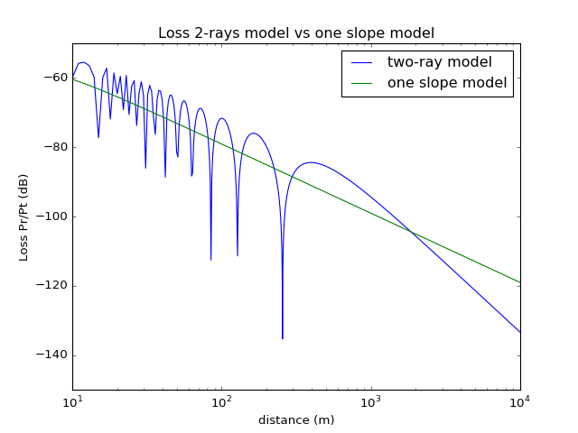

pylayers.antprop.loss¶
Loss module¶
This module implements path loss models for various situations.
cdf(x[, colsym, lab, lw]) |
plot the cumulative density function |
cost231(pBS, pMS, hroof, phir, wr, fMHz[, ...]) |
Walfish Ikegami model (COST 231) |
cost259(pMS, pBS, fMHz) |
cost259 model |
cost2100(pMS, pBS, fGHz[, nfloor, dB]) |
cost 2100 model |
calnu(h, d1, d2, fGHz) |
Calculate the diffraction Fresnel parameter |
Dgrid_points(points, Px) |
distance point to grid |
Dgrid_zone(zone, Px) |
Distance point to zone |
FMetisShad2(fGHz, r, D[, sign]) |
F Metis shadowing function |
FMetisShad(fGHz, r, D[, sign]) |
F Metis shadowing function |
gaspl(d, fGHz, T, PhPa, wvden) |
attenuation due to atmospheric gases |
hata(pMS, pBS, fGHz, hMS, hBS, typ) |
Hata Path loss model |
LossMetisShadowing(fGHz, tx, rx, pg, uw, uh, ...) |
Calculate the Loss from |
LossMetisShadowing2(fGHz, tx, rx, pg, uw, ...) |
Calculate the Loss from |
Losst(L, fGHz, p1, p2[, dB]) |
calculate Losses between links p1 p2 |
Loss0_v2 |
|
Loss0(S, rx, ry, f, p) |
calculate Loss through Layers for theta=0 deg |
Loss_diff(u) |
calculate Path Loss of the diffraction |
OneSlopeMdl(D, n, fGHz) |
one slope model |
PL0(fGHz[, GtdB, GrdB, R]) |
Path Loss at frequency fGHZ @ R |
PL(fGHz, pts, p[, n, dB, d0]) |
calculate Free Space Path Loss |
visuPts(S, nu, nd, Pts, Values[, fig, sp, ...]) |
visuPt : Visualization of values a given points |
-
pylayers.antprop.loss.Dgrid_points(points, Px)[source]¶ distance point to grid
Parameters: points : np.array
grid Np x 2 array
Px : np.array
point 2 x 1 array
-
pylayers.antprop.loss.Dgrid_zone(zone, Px)[source]¶ Distance point to zone
A zone is a quadrilateral zone.
Parameters: zone : dictionnary
xmin xmax Nx ymin ymax Ny
Px : np.array
point
Build the distance matrix between Tx and points in the zone
Notes
use broadcasting instead
-
pylayers.antprop.loss.FMetisShad(fGHz, r, D, sign=1)[source]¶ F Metis shadowing function
Parameters: fGHz : float
frequency GHz
r : float
distance between Tx and Rx
D : float
indirect distance between Tx and Rx (screen effect)
sign : int
== 1 : Shadowing NLOS situation ==-1 : No shadowing LOS situation
See also
Notes
Provides an implementation of formula (6.6) in D1.4 of METIS project
-
pylayers.antprop.loss.FMetisShad2(fGHz, r, D, sign=1)[source]¶ F Metis shadowing function
Parameters: fGHz : np.array(Nf)
frequency GHz
r : np.array(Nseg,)
distance between Tx and Rx
D : np.array(Nseg,Nscreen)
indirect distance between Tx and Rx (screen effect)
sign : np.array(Nseg,Nscreen)
== 1 : Shadowing NLOS situation ==-1 : No shadowing LOS situation
Returns: F : np.array(Nseg,Nscreen,Nf)
See also
Notes
Provides an implementation of formula (6.6) in D1.4 of METIS project
-
pylayers.antprop.loss.Loss0(S, rx, ry, f, p)[source]¶ calculate Loss through Layers for theta=0 deg
Parameters: S : Simulation object
rx : extremity of link
ry : extremity of link
fGHz : float
frequency GHz
p :
-
pylayers.antprop.loss.LossMetisShadowing(fGHz, tx, rx, pg, uw, uh, w, h)[source]¶ Calculate the Loss from
Parameters: fGHz : float
tx : np.array (,3) of floats
transmiter coordinates
rx : np.array (,3) of floats
receiver coordinates
pg : np.array (,3) of floats
center of gravity of the screen
uw : np.array (,3) of floats
unitary vector along width dimension
uh : np.array (,3) of floats
unitary vector along height dimension
w : float
width in meters
h : float
height in meters
Returns: Lsh : float
Loss in dB to add to the FS path Loss
Notes
This function provides an implementation of formula 6.5 of D1.4 deliverable of METIS project
[Metis D1.4](Ahttps://www.metis2020.com/wp-content/uploads/METIS_D1.4_v3.pdf)
# geometry parametric issue : find M in [tx-rx] defined as M = alpha*rx + (1-alpha)tx where alpha in [0-1]. # if alpha = 0 then M = tx ; if alpha = 1 then M = rx. # Besides, M is defined as M = pg + beta*uw + gamma*uh then alpha*rx + (1-alpha)tx = pg + beta*uw + gamma*uh # [rx-tx , -uw, -uh]*[alpha,beta,gamma].T = pg - tx <==> Ax = b solved by la.solve ; x[0]=alpha, x[1]=beta and
-
pylayers.antprop.loss.LossMetisShadowing2(fGHz, tx, rx, pg, uw, uh, w, h)[source]¶ Calculate the Loss from
Parameters: fGHz : np.array(,Nf)
tx : np.array (3,Nseg) of floats
transmiter coordinates
rx : np.array (3,Nseg) of floats
receiver coordinates
pg : np.array (3,Nscreen) of floats
center of gravity of the screen
uw : np.array (3,Nscreen) of floats
unitary vector along width dimension
uh : np.array (3,Nscreen) of floats
unitary vector along height dimension
w : np.array (,Nscreen)
width in meters
h : np.array (,Nscreen)
height in meters
Returns: Lsh : np.array (Nseg,Nscreen,Nf)
Loss in dB to add to the FS path Loss
Notes
This function provides an implementation of formula 6.5 of D1.4 deliverable of METIS project
[Metis D1.4](Ahttps://www.metis2020.com/wp-content/uploads/METIS_D1.4_v3.pdf)
# geometry parametric issue : find M in [tx-rx] defined as M = alpha*rx + (1-alpha)tx where alpha in [0-1]. # if alpha = 0 then M = tx ; if alpha = 1 then M = rx. # Besides, M is defined as M = pg + beta*uw + gamma*uh then alpha*rx + (1-alpha)tx = pg + beta*uw + gamma*uh # [rx-tx , -uw, -uh]*[alpha,beta,gamma].T = pg - tx <==> Ax = b solved by la.solve ; x[0]=alpha, x[1]=beta and
-
pylayers.antprop.loss.Losst(L, fGHz, p1, p2, dB=True)[source]¶ calculate Losses between links p1 p2
Parameters: L : Layout object
fGHz : np.array
frequency GHz
p1 : source points
(2 x Np1) array or (2,) array
p2 : observation point
(2 x Np2) array or (2,) array
dB : boolean
See also
pylayers.antprop.coverage,pylayers.slab.Interface.losstExamples
>>> import matplotlib.pyplot as plt >>> from pylayers.measures.mesuwb import * >>> from pylayers.antprop.loss import * >>> S = Simul() >>> S.layout('WHERE1.ini') >>> fGHz = 4 >>> Tx,Rx = ptw1() >>> Lwo,Lwp,Edo,Edp = Losst(S.L,fGHz,Tx.T,Rx[1,0:2],dB=True) >>> fig=plt.figure(figsize=(20,10)) >>> fig,ax = S.L.showGs(fig=fig) >>> tit = plt.title('test Losst') >>> sc2 = ax.scatter(Rx[1,0],Rx[1,1],s=20,marker='x',c='k') >>> sc1 = ax.scatter(Tx[:,0],Tx[:,1],s=20,c=Lwo,linewidth=0) >>> cb = plt.colorbar(sc1) >>> cb.set_label('dB') >>> plt.show()
-
pylayers.antprop.loss.OneSlopeMdl(D, n, fGHz)[source]¶ one slope model
Parameters: D : np.array
distance array
n : float
path loss exponent
fGHz : np.array
frequency GHz
Returns: PL : np.array
path loss as a function of distance
-
pylayers.antprop.loss.PL(fGHz, pts, p, n=2.0, dB=True, d0=1)[source]¶ calculate Free Space Path Loss
Parameters: fGHz : float
frequency (GHz)
pts : np.array (2xNp)
points
p : np.array (2x1) or (2xNp)
n : float
path loss exponent (default = 2)
dB : : boolean
return result in dB
Returns: PL : np.array
path loss w.r.t distance and frequency
-
pylayers.antprop.loss.PL0(fGHz, GtdB=0, GrdB=0, R=1)[source]¶ Path Loss at frequency fGHZ @ R
Parameters: fGHz: float
frequency GHz
GtdB: float
transmitting antenna gain dB (default 0 dB)
GrdB: float
receiving antenna gain dB (default 0 dB)
R : float
distance in m
Returns: PL0 : float
path @ R
Notes
\[PL_0 = -20 log_{10}(\frac{\lambda}{4\pi}) - GtdB -GrdB\]Examples
>>> fGHz = 2.4 >>> PL = PL0(fGHz) >>> assert (PL<41)&(PL>40),"something wrong"
-
pylayers.antprop.loss.calnu(h, d1, d2, fGHz)[source]¶ Calculate the diffraction Fresnel parameter
Parameters: h : signed height w.r.t LOS (meter)
d1 : distance 1 (meter)
d2 : distance 2 (meter)
fGHz : frequency GHz
Notes
\[\nu = h \sqrt{\frac{2}{\lambda} \frac{d_1+d_2}{d_1 d_2}}\]
-
pylayers.antprop.loss.cdf(x, colsym='', lab='', lw=4)[source]¶ plot the cumulative density function
Parameters: x : np.array()
colsym : string
lab : string
lw : int
linewidth
Examples
>>> import numpy as np
-
pylayers.antprop.loss.cost2100(pMS, pBS, fGHz, nfloor=1, dB=True)[source]¶ cost 2100 model
Parameters: pMS :
pBS :
fGHz : float
nfloor : int
dB : boolean
-
pylayers.antprop.loss.cost231(pBS, pMS, hroof, phir, wr, fMHz, wb=20, dB=True, city='medium')[source]¶ Walfish Ikegami model (COST 231)
Parameters: pBS : np.array (3xNlink)
pMS : np.array (3xNlink)
hroof : np.array (1xNlink)
phir : np.array (1xNlink)
degrees
wr : np.array (1xNlink)
fMHz : np.array (1xNf)
wb : float
average building separation
dB : boolean
Returns: PathLoss (Nlink,Nf)
References
http://morse.colorado.edu/~tlen5510/text/classwebch3.html
Examples
>>> from pylayers.antprop.loss import * >>> import matplotlib.pyplot as plt >>> import numpy as np >>> # Number of links and BS and MS heights >>> Nlink = 100 >>> hBS = 300 >>> hMS = 1.5 >>> # hroof and phir are drawn uniformily at random >>> hroof = 40*np.random.rand(Nlink) >>> wr = 10*np.ones(Nlink) >>> phir = 90*np.random.rand(Nlink) >>> pMS = np.vstack((np.linspace(10,2500,Nlink),np.zeros(Nlink),hMS*np.ones(Nlink))) >>> pBS = np.vstack((np.zeros(Nlink),np.zeros(Nlink),hBS*np.ones(Nlink))) >>> # frequency range >>> fMHz = np.linspace(700,1900,120) >>> pl = cost231(pBS,pMS,hroof,phir,wr,fMHz) >>> im = plt.imshow(pl,extent=(0,100,0.7,1.9)) >>> cb = plt.colorbar() >>> cb.set_label('Loss (dB)') >>> plt.axis('tight') >>> plt.xlabel('Frequency (GHz)') >>> plt.ylabel('Link Number') >>> plt.title('100 WI Path Loss realizations ') >>> plt.show()(Source code, png, hires.png, pdf)

{kind=link}
{kind=link}
-
pylayers.antprop.loss.cost259(pMS, pBS, fMHz)[source]¶ cost259 model
Parameters: pMS : np.array (position of Mobile Station)
pBS : np.array (position of Base station)
fMHz : float
-
pylayers.antprop.loss.gaspl(d, fGHz, T, PhPa, wvden)[source]¶ attenuation due to atmospheric gases
Parameters: d : np.array
range (meters)
fGHz : np.array
frequency (GHz)
T : float
Temprature in degree Celcius
PhPa : float
Pressure in hPa
wvden : float
Water vapor density (g/m**3)
Notes
This function implements the recommandation UIT-P676-10
Examples
>>> import numpy as np >>> import matplotlib.pyplot as plt >>> T = 15 >>> PhPa = 1013 >>> wvden = 7.5 >>> d = 1000 >>> fGHz = np.linspace(1,1000,100) >>> L = gaspl(d,fGHz,T,PhPa,wvden) >>> plt.plot(fGHz,L)
-
pylayers.antprop.loss.hata(pMS, pBS, fGHz, hMS, hBS, typ)[source]¶ Hata Path loss model
Parameters: pMS : np.array
Mobile position (meters)
pBS : np.array
Base station position (meters)
fGHz : np.array
hMS : height mobile station (m)
hBS : height base station (m)
Returns: L : Attenuation (dB)
Notes
This model is valid until 1.5GHz, for higher frequency see COST231-Hata model
References
OKUMURA (Y.), OHMORI (E.), KAWANO (T.) et FUKUA (K.). Field strength and its varia- bility in UHF and VHF land-mobile radio ser- vice. Rev. Elec. Commun. Lab., vol. 16, n o 9, 1968.
HATA (M.). Empirical formula for propaga- tion loss in land mobile radio services. IEEE Trans. Veh. Technol., vol. 29, pp. 317-325, Aug. 1980
-
pylayers.antprop.loss.lossref_compute(P, h0, h1, k=1.3333333333333333)[source]¶ compute loss and reflection rays on curved earth
Parameters: P : float |list
h0 : float:
height of 1st point
h1 : float:
height of 2nd point
k : electromagnetic earth factor
Returns: dloss : float
length of direct path (meter)
dref : float
length of reflective path (meter)
psy : float
Reflection angle
References
- Mahafza, Radar systems analysis and design using MATLAB, Third edition. Boca Raton; London: CRC/Taylor & Francis, chapter 8, 2013.
-
pylayers.antprop.loss.two_rays_curvedearthold(P, h0, h1, fGHz=2.4, **kwargs)[source]¶ Parameters: P : float |list
h0 : float:
height of 1st point
h1 : float:
height of 2nd point
fGHz : float
frequency (GHz)
k : float
electromagnetic earth factor
GtdB : float
Transmitter Antenna Gain (dB)
GrdB : float
Receiver Antenna Gain (dB)
gamma : complex (-1.+0.j)
Reflexion coeff if eps and sig are not precised
‘pol’: string (‘v’)
polarization (‘v’|’h’)
‘eps’ : float ([])
lossless relative permittivity [],
‘sig’: float (0.)
conductivity
dB : boolean (True)
return result in dB
Returns: P :
received power
-
pylayers.antprop.loss.two_rays_flatearth(fGHz, **kwargs)[source]¶ Parameters: p0 : transmitter position
(3 x Np1) array or (2,) array
p1 : receiver position
(3 x Np2) array or (2,) array
OR :
d : distance between Tx and Rx
(Np1,)
ht : Tx height
hr : Rx height
(Np1)
GtdB : float (0)
Transmitter Antenna Gain (dB)
GrdB : float(0)
Receiver Antenna Gain (dB)
fGHz : float (2.4)
frequency (GHz)
gamma : complex (-1.+0.j)
Reflexion coeff
dB : boolean (True)
return result in d
Returns: P :
received power
References
https://en.wikipedia.org/wiki/Two-ray_ground-reflection_model#As_a_case_of_log_distance_path_loss_model http://morse.colorado.edu/~tlen5510/text/classwebch3.html#x15-590003.3.3
Examples
>>> from pylayers.antprop.loss import * >>> NPT=10000 >>> x=np.array([0,0,8]) >>> x=x.reshape(3,1) >>> y = np.ones((3,NPT)) >>> y[0,:]=0 >>> y[1,:]=np.arange(NPT) >>> y[2,:]=2 >>> g0=1 >>> g1=1 >>> fGHz=2.4 >>> PL2R=two_rays_flatearth(p0=x,p1=y,fGHz=fGHz,GtdB=g0,GrdB=g1) >>> PL1R = PL(fGHz,x,y,2) >>> plt.semilogx(PL2R,label='two-ray model') >>> plt.semilogx(-PL1R[0,:],label='one slope model') >>> plt.axis([10,NPT,-150,-50]) >>> plt.title('Loss 2-rays model vs one slope model') >>> plt.xlabel('distance (m)') >>> plt.ylabel('Loss Pr/Pt (dB)') >>> plt.legend() >>> plt.show()(Source code, png, hires.png, pdf)
>>> d=np.arange(1,1000) >>> PL2Rd = two_rays_flatearth(d=d,ht=np.array([5]),hr=np.array([10]),fGHz=fGHz,GtdB=g0,GrdB=g1) >>> plt.semilogx(PL2Rd,label='two-ray model') >>> plt.semilogx(-PL1R[0,:],label='one slope model') >>> plt.axis([10,NPT,-150,-50]) >>> plt.title('Loss 2-rays model vs one slope model') >>> plt.xlabel('distance (m)') >>> plt.ylabel('Loss Pr/Pt (dB)') >>> plt.legend() >>> plt.show()
{kind=link}
{kind=link}
{kind=link}
{kind=link}